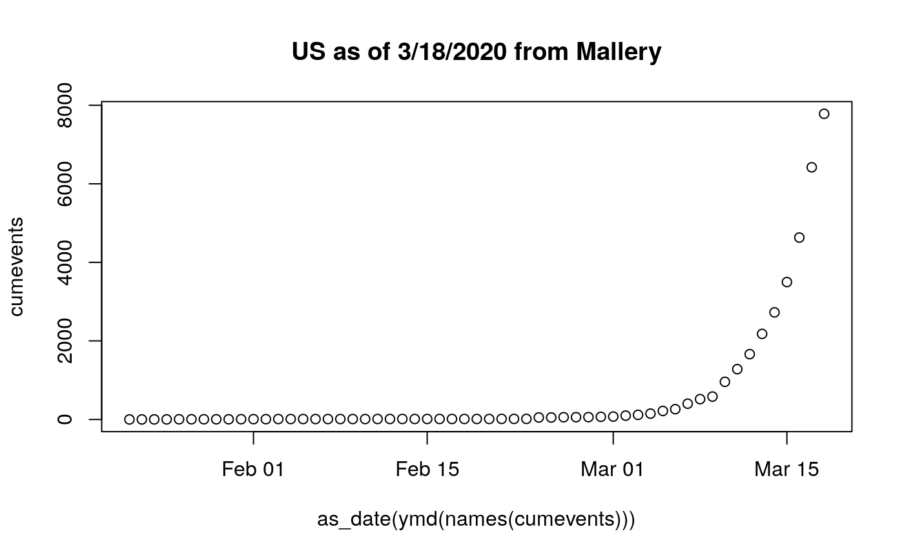
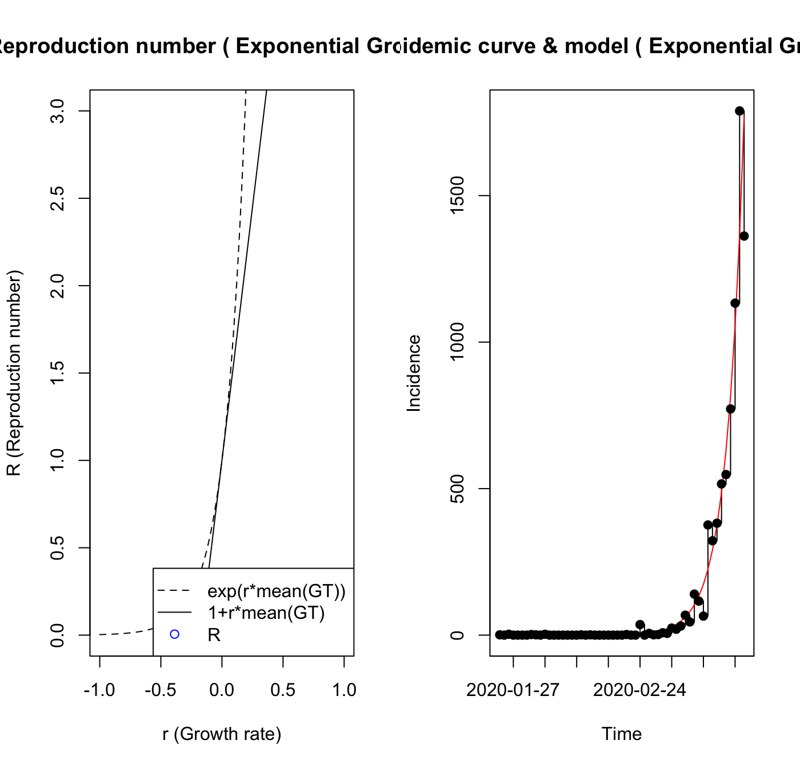
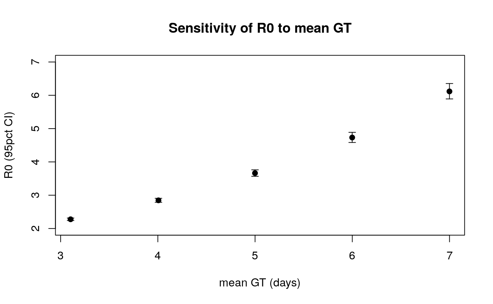

vignettes/basic.Rmd
basic.RmdsuppressMessages({ suppressPackageStartupMessages({ library(sars2pack) library(lubridate) }) }) datevec = as_date(mdy( c("1/22/20", "1/23/20", "1/24/20", "1/25/20", "1/26/20", "1/27/20", "1/28/20", "1/29/20", "1/30/20", "1/31/20", "2/1/20", "2/2/20", "2/3/20", "2/4/20", "2/5/20", "2/6/20", "2/7/20", "2/8/20", "2/9/20", "2/10/20", "2/11/20", "2/12/20", "2/13/20", "2/14/20", "2/15/20", "2/16/20", "2/17/20", "2/18/20", "2/19/20", "2/20/20", "2/21/20", "2/22/20", "2/23/20", "2/24/20", "2/25/20", "2/26/20", "2/27/20", "2/28/20", "2/29/20", "3/1/20", "3/2/20", "3/3/20", "3/4/20", "3/5/20", "3/6/20", "3/7/20", "3/8/20", "3/9/20", "3/10/20", "3/11/20", "3/12/20", "3/13/20", "3/14/20", "3/15/20", "3/16/20", "3/17/20", "3/18/20"))) cumevents = c(1, 1, 2, 2, 5, 5, 5, 5, 5, 7, 8, 8, 11, 11, 11, 11, 11, 11, 11, 11, 12, 12, 13, 13, 13, 13, 13, 13, 13, 13, 15, 15, 15, 51, 51, 57, 58, 60, 68, 74, 98, 118, 149, 217, 262, 402, 518, 583, 959, 1281, 1663, 2179, 2727, 3499, 4632, 6421, 7783) names(cumevents) = datevec plot(cumevents~as_date(ymd(names(cumevents))), main="US as of 3/18/2020 from Mallery")

Now we work with the R0 package functions. The plotting titles are hard to manage, and the code from package R0 will need to be dissected to improve annotation of figures.
mGT <- generation.time("gamma", c(5.8,.95)) # from DOI 10.7326/M20-0504 usdat = trim_leading_values(diff(cumevents)) est1 = estimate.R( usdat, GT = mGT, t = as_date(ymd(names(usdat))), begin=1L, end=as.integer(length(usdat)), methods=c("EG", "TD")) # , "ML", "TD"))
## Waiting for profiling to be done...## Warning in est.R0.TD(epid = c(`2020-01-24` = 1, `2020-01-25` = 0, `2020-01-26` =
## 3, : Simulations may take several minutes.## Warning in est.R0.TD(epid = c(`2020-01-24` = 1, `2020-01-25` = 0, `2020-01-26` =
## 3, : Using initial incidence as initial number of cases.est1## Reproduction number estimate using Exponential Growth method.
## R : 4.920046[ 4.75321 , 5.095213 ]
##
## Reproduction number estimate using Time-Dependent method.
## 3.356286 0 1.838833 0 0 0 0 0.06355674 0.003480709 0 ...
The R0 package includes sensitivity analysis support. We need to specify features of the generation time models, and ranges of R0 are produced.
sa1 = sa.GT(incid=usdat, GT.type="gamma", GT.mean=seq(3,7,1), GT.sd.range=2, begin=1L, end=as.integer(length(usdat)), est.method="EG")
## Waiting for profiling to be done...
## Waiting for profiling to be done...
## Waiting for profiling to be done...
## Waiting for profiling to be done...
## Waiting for profiling to be done...sa1 = apply(sa1[,-1], 2, as.numeric) plot(x=sa1[,"GT.Mean"], xlab="mean GT (days)", y=sa1[,"R"], ylim=c(2, 7), ylab="R0 (95pct CI)", type="p", pch=19, col="black", main="Sensitivity of R0 to mean GT") arrows(x0=sa1[,"GT.Mean"], y0=sa1[,"CI.lower"], y1=sa1[,"CI.upper"], angle=90, code=3, col="black", length=0.05)
